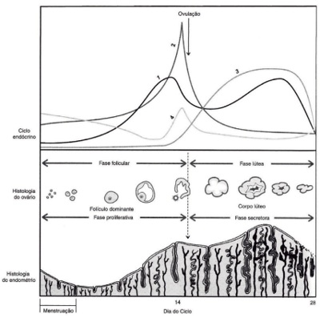
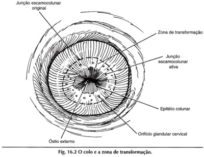
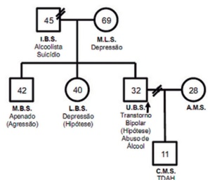
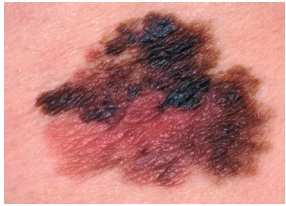

Questão 6 · Predição e prevenção · PréEclâmpsia · 4000183574Com relação à pré-eclâmpsia, assinale a alternativa CORRETA entre as abaixo relacionadas:
A São fatores de risco para pré-eclâmpsia (PE) nuliparidade, história familiar de PE, distopias placentárias e magreza (Índice de Massa Corpórea < 20);
B A Dopplervelocimetria das artérias uterinas isoladamente, avaliando a intensidade da invasão trofoblástica no 1º trimestre é o melhor método para predição da ocorrência de PE;
C O uso de ácido acetilsalicílico (60 a 150 mg/ dia) e cálcio (1,5 a 2 g/dia) são intervenções benéficas em grupos de risco para evitar o desenvolvimento da PE;
D O ganho de peso > 1 kg/semana, edema em mãos e face ou outros sintomas, como cefaleia persistente, juntamente com proteinúria são suficientes para o diagnóstico de PE.
Questão 7 · Def inição · Fatores de risco · 4000183573Parturiente, multípara (IIIG IIP 0A), 38 semanas, feto único, vivo e cefálico, com antecedente obstétrico de 2 cesáreas e de não ter frequentado assistência pré-natal adequada, se apresenta no plantão com dinâmica uterina inicial e, enquanto aguarda a definição do qual seria a conduta a ser tomada, apresenta bradicardia fetal sustentada (abaixo de 110 bpm), precedida de desacelerações tardias. Há distensão do segmento uterino inferior, com palpação do ligamento redondo retesado, desviado para a face ventral do órgão. A paciente estava ansiosa e agitada. Então, houve piora da dor e ao toque vaginal, não se percebe mais a apresentação fetal. A paciente se queixou de dor escapular e passou a apresentar hipotensão. Com relação a essa situação clínica, assinale a alternativa
A Aparentemente trata-se de um quadro de Descolamento Prematuro de Placenta, com os sinais clássicos da separação da placenta do leito placentário. A conduta a ser tomada será indução com misoprostol;
B Trata-se de um quadro clássico de Placenta Prévia Centro-Total, com os achados palpatórios típicos da inserção bai[a da placenta obstruindo a descida da apresentação. As cesáreas anteriores são fator risco para este quadro;
C Provavelmente estamos frente a um quadro clássico de prenhez ectópica rota e a dor referida na escápula é o denominado Sinal de Laffont que é provocado pela presença de sangue livre na cavidade abdominal;
D A evolução do processo sugere que seja uma ruptura uterina, emergência obstétrica pouco usual, mais comum em portadoras de cicatrizes uterinas. A conduta será a imediata laparotomia para retirada do concepto.
Questão 8 · Assistência prénatal · 4000183572Com relação ao impacto de condições clínicas na gravidez, todas as alternativas a seguir estão corretas, EXCETO:
A O hemograma completo serve para o rastreio da anemia e, se a hemoglobina for inferior a 11 g/dL e > 8 mg/dL, deve-se proceder ao e[ame parasitológico de fezes prescrevendo suplementação de ferro com sulfato ferroso terapêutico (120 a 240 mg de ferro elementar/dia);
B O rastreio universal do diabetes gestacional deve ser realizado com o e[ame de glicemia de jejum na primeira consulta de pré-natal e o teste oral de tolerância à glicose, com 75 gramas de de[trosol, entre 24 e 28 semanas;
C A avaliação tireoidiana na 1ª consulta de pré-natal é realizada por meio da palpação da glândula, sendo o rastreamento recomendado apenas em grupos cujo risco de tireopatia é aumentado;
D A detecção de teste não-treponêmico para sífilis reagente e simultaneamente do teste treponêmico reagente, permite inferir que pode tratar-se de um falso reagente, sobretudo nos casos de baixas titulações.
Questão 9 · Complicações · Classif icação · Classif icação · 4000183571Parturiente de termo, com quadro de placenta prévia centro-total, é submetida a cesárea. Durante o intraoperatório, o sangramento se torna de difícil controle. Assinale a alternativa a descrita:
A Somente se caracterizará como hemorragia pós-parto se o volume de perda de sangue for superior a 1.000 ml, pois até então é considerado habitual para as perdas durante um parto por cesárea;
B O índice de choque (IC), que se obtém com a divisão da frequência cardíaca pela pressão arterial sistólica, permite identificar os casos de hemorragia pós-parto graves, se o IC > 1;
C A e[ecução da técnica de B-Lynch antes da histerotomia e da e[tração fetal é e[celente como método para evitar que ocorra o quadro de hemorragia pós-parto;
D Se houver a constatação de associação de acretismo placentário, a situação deverá ser rapidamente resolvida com a extração manual da placenta.
Questão 10 · Imunizaçao na gestação · 4000183570Entre as vacinas abaixo relacionadas, qual
A Tríplice viral (SCR);
B Vacina contra hepatite A;
C Vacina DTPA (Difteria, Tétano e Coqueluche Acelular);
D Vacina contra a COVID-19.
Questão 11 · Sangramento primeira metade · 4000183569São situações clínicas que se associam a quadros hemorrágicos, diagnosticadas no primeiro trimestre da gravidez todas as alternativas descritas a seguir, EXCETO:
A Doença trofoblástica;
B Abortamento;
C Gravidez ectópica;
D Placenta prévia.
Questão 12 · Ressonância magnética · 4000183568Com relação ao rastreamento do câncer de mama é CORRETO dizer que:
A um programa de rastreamento bem implementado, organizado e não-oportunístico tem o objetivo de reduzir as ta[as de incidência do câncer de mama;
B a Ressonância Magnética das Mamas suplementar em mulheres com mamas e[tremamente densas na mamografia reduz a ta[a de câncer de intervalo;
C mulheres mutadas BRCA1 e BRCA2 ou outra mutação com aumento do risco para câncer de mama não devem se submeter à mamografia pelo risco elevado da radiação sobre as mamas;
D a Ultrassonografia de mamas (US) é aprovada como o método de rastreamento mais indicado para todas as mulheres com risco habitual com menos de 40 anos.
Questão 13 · Monitorização pós tratamento · Tratamento da síf ilis na gestação · Diagnóstico da síf ilis · 4000183567Gestante inicia seu pré-natal com 18 semanas e, na primeira consulta da UBS, realiza os testes rápidos para HIV e para sí lis. Este último mostrou resultado positivo. Como proceder?
A Tratar o casal imediatamente e solicitar e[ames confirmatórios mensalmente;
B Aguardar o teste treponêmico para confirmar diagnóstico e depois tratar;
C Se a história confirmar ser sífilis tardia, tratar a paciente com eritromicina;
D Se o teste do parceiro for negativo, não há necessidade de o mesmo ser tratado.
Questão 14 · Ginecologia · Estadiamento · Tratamento · 4000183566Uma paciente de 50 anos foi submetida à cirurgia pela presença de um tumor pélvico originado no ovário esquerdo. Não foi possível a realização do exame anatomopatológico intraoperatório, pois o criostato do hospital estava em conserto. O cirurgião optou pela realização da salpingooforectomia esquerda. O posterior exame histológico da peça cirúrgica em xação padrão pela para na revelou tratar-se de um adenocarcinoma seroso grau 3 do ovário esquerdo, sem alteração na tuba retirada. Qual seria sua próxima orientaçãoà paciente?
A Nova cirurgia para estadiamento da neoplasia;
B Seguimento com CA 125 e ultrassonografia trimestral;
C Quimioterapia adjuvante;
D Radioterapia adjuvante.
Questão 15 · Planejamento f amiliar · 4000183565Com relação aos métodos anticoncepcionais, assinale a alternativa INCORRETA:
A O implante subdérmico de etonorgestrel é o método que apresenta maior eficácia, com ta[as de falha (0,05) menores do que as observadas na esterilização feminina (0,5) ou masculina (0,15);
B O uso de contraceptivos progestagênicos e[clusivos tem como efeitos colaterais modificações no padrão de sangramento, cefaleia, tontura, mudança de humor (nervosismo e depressão) e ganho de peso;
C Nos contraceptivos hormonais combinados(CHC), o principal efeito do componente estrogênico é a inibição do pico pré-ovulatório do hormônio luteinizante (LH), evitando, assim, a ovulação;
D Por sua vez o componente progestacional dos CHC e[erce efeito antiproliferativo no endométrio, tornando-o não receptivo à implantação; altera a secreção e a peristalse das tubas uterinas.
Questão 16 · Ginecologia · Fisiologia do ciclo menstrual · 4000183564REFERÊNCIA: PALTER, S.F. & OLIVE, D.L Cap.7 In: BEREK, J..S Novak Tratado de Ginecologia Auto-avaliação e Revisão, Editora Guanabara Koogan, Rio de Janeiro, 2005. Com base no gráfico acima assinale a alternativa CORRETA:

A O hormônio representado pela linha 2 atua sobre o folículo, induzindo a atresia imediata;
B O hormônio representado pela linha 1 estimula o endométrio a desenvolver mitoses e crescimento das arteríolas espiraladas;
C A apoptose do corpo lúteo propiciará a manutenção da produção dos hormônios representados pelas linhas 1 e 3;
D O hormônio representado como 4 é produzido nas células teca-foliculares dos ovários.
Questão 17 · Vaginose bacteriana · Ginecologia · 4000183563UMA SUCESSÃO DE ERROS: Paciente procura o ginecologista com queixa de “menstruação fétida” e corrimento malcheiroso muito abundante, que chega a molhar a calcinha. Não tem prurido nem ardor genital. Ao exame clínico, o especular permite constatar que o pH vaginal é 5.5 e há conteúdo vaginal branco acinzentado muito uído, sem sinais inflamatórios. Assinale a resposta que garante o raciocínio clínico e conduta clínica relacionadas:
A O laudo do e[ame bacterioscópico da paciente acima descreve achado de grande quantidade de “clue-cells”. Essa característica celular corresponde a um halo perinuclear e está intimamente associado à presença de papilomavirus. Por isso mesmo, você solicita a pesquisa de HPV por meio de hibridização in situ. O resultado desse exame é positivo para “tipos virais de bai[o risco”, assim você deve indicar uma biópsia do colo uterino;
B Como você pediu a pesquisa de HPV e o vírus foi detectado, o marido da paciente teve acesso ao resultado do exame dela e lhe telefona bastante alterado dizendo que “acessou a internet e descobriu que o papilomavirus é causa de uma doença se[ualmente transmissível”, ao que você responde que ele tem razão, perguntando a seguir se ele (o marido) teria uma amante. O marido diz que não, dessa forma você conclui que, no caso quem deve ter o amante é ela;
C Você fez a biópsia do colo uterino e o diagnóstico foi “cervicite crônica”, assim você concluiu que provavelmente fez a biópsia no lugar errado, devendo ser indicado então uma conização com alça diatérmica, pois dependerá do resultado desse e[ame a confirmação da IST e o encaminhamento para a conduta correta. Com relação ao marido, você o encaminha para o urologista para que seja orientado sobre sua possível IST;
D A queixa da menstruação fétida poderá ser resultado da ação na vagina do sangue menstrual causando elevação transitória do pH, o que poderá liberar algumas substâncias voláteis (caracterizadas como aminas, especialmente a putrescina e a cadaverina) que provocam maucheiro.Geralmente associado coma vaginose bacteriana,que corresponde a modificações na microbiota vaginal.
Questão 18 · Falência ovariana prematura · Ginecologia · 4000183562Adelina tem 32 anos e há 2 anos não tem mais menstruação. Ela contou que teve a menarca com 14 anos, nunca engravidou a despeito de jamais ter evitado lhos. Aos 29 anos, notou as menstruações com intervalos maiores e duração menor. Teve a última menstruação com 30 anos e, desde então, tem notado di culdade para manter a atividade sexual tanto porque não apresenta mais desejo sexual, quanto porque sua vagina está muito seca, o que produz dor na penetração. Tem importantes ondas de calor e sente-se muito deprimida. Com base no breve resumo clínico apresentado assinale a alternativa CORRETAentre as abaixo relacionadas:
A A hipótese diagnóstica de Insuficiência Ovariana Prematura (IOP) poderá ser confirmada se o e[ame de ultrassonografia transvaginal verificar os ovários com dimensões inferiores a 9,0 cm³;
B Serão necessárias avaliações de gonadotrofinas (que devem estar elevadas) e dos esteroides ovarianos (que devem estar reduzidos) em 2 dosagens mensais sucessivas para confirmar diagnóstico;
C Os níveis séricos das gonadotrofinas e dos esteroides ovarianos na presente situação em que se encontra Adelina deverá caracterizar uma amenorréia hiperestrogênica e hipogonadotrófica;
D Acaracterizaçãodescritano resumoclínico sugerequeAdelina épacientecomriscoelevado paraodesenvolvimento de câncer de endométrio, pois nunca engravidou e teve menopausa muito cedo.
Questão 19 · Colo uterino · 4000183561REFERÊNCIA: RIVOIRE, W. et al. In: Freitas F et al. Rotinas em Ginecologia, Editora, cidade da editora, 2002, p? Avalie o esquema do colo uterino aqui representado e assinale a alternativa INCORRETA entre as abaixo relacionadas:

A Caminhando na direção cranial da JEC teremos a endocérvice, cujo epitélio será o colunar mucoprodutor;
B Alocalização anatômica da zona de transformação no orifício externo do colo uterino tem relação com os níveis de estradiol;
C Habitualmente a região denominada de ‘Zona de transformação’ é muito rica em células metaplásicas;
D O processo de renovação epitelial na Junção Escamocolunar ativa é patológico e a metaplasia é denominada de NIC.
Questão 20 · Diagnóstico e Exames Complementares · Ginecologia · Climatério · 4000183560Mulher de 48 anos que não menstrua há 4 meses após sucessivos ciclos irregulares, com intervalos longos (45 a 60 dias), apresenta di culdade para dormir e sensação de calor intermitente. Entre as alternativas abaixo, assinale aquela que relaciona de maneira CORRETA os possíveis resultados de exames subsidiários e hipóteses diagnósticas para esta situação.
A Estradiol bai[o = Síndrome dos ovários micropolicísticos;
B FSH elevado = Insuficiência ovariana;
C Progesterona elevada = Disovulia;
D LH bai[o = Anovulação crônica.
Questão 21 · Incidência · 4000183559Para qual das doenças abaixo listadas o melhor indicador de morbidade é a incidência?
A diabetes;
B hipertensão;
C meningite;
D obesidade.
Questão 22 · COVID 19 · Mortalidade · 4000183558Em 2021, em Sorocaba, ocorreram 52 mil casos noti cados de Covid-19, 10 mil casos hospitalizados por Covid-19 e 3 mil óbitos por Covid-19. A população de Sorocaba em 2021 era estimada em 700 mil habitantes. Pode-se afirmar que
A a incidência de casos de COVID-19 foi de 1,4 por cem habitantes;
B a mortalidade específica porCOVID-19 foi de 4,3 óbitos por mil habitantes;
C a letalidade por COVID-19 foi de 4,3 óbitos por mil habitantes;
D a taxa de hospitalização dos casos de COVID-19 foi de 1,4%.
Questão 23 · Outros Indicadores de Relevância em Saúde Pública · 4000183557O WHO-QOL 100 ( medidas das seguintes dimensões
A dor, deambulação, consciência;
B indivíduo, família, comunidade;
C física, mental, social e ambiental;
D trabalho, assistência à saúde,segurança social.
Questão 24 · Redes de Atenção à Saúde RAS · Expansão da APS no Brasil · 4000183556Leia o seguinte conceito: “ São arranjos organizativos de ações e serviços de saúde, de diferentes densidades tecnológicas, que integradas por meio de sistemas de apoio técnico, logístico e de gestão buscam garantir a integralidade do cuidado Trata-se de:
A programas de saúde;
B redes de atenção à saúde;
C planos de saúde;
D empresas médicas.
Questão 25 · Princípios da Medicina de Família e Comunidade · 4000183555A figura a baixo representa os vetores I, U e C referentes ao desempenho de um Sistema de Saúde, resultantes da atenção à saúde prestada de acordo com: a complexidade do problema de saúde (I=Integralidade) e sua respectiva cobertura pelo sistema (U=Universalidade). O vetor C corresponde à função de

A equidade;
B eficácia;
C eficiência;
D discriminação
Questão 26 · Genograma · 4000183554A figura ao lado representa uma técnica utilizada na Estratégia de Saúde da Família. Trata-se de

A ecomapa;
B genograma;
C descrição dos tipos de transtornos mentais encontrados em várias amostras;
D distribuição da frequência de casos de transtornos mentais em uma amostra.
Questão 27 · Epidemias · 4000183553Qual é a melhor definição de epidemia?
A Incidência maior que o dobro da média esperada;
B Incidência maior que a média esperada mais 2,96 desvios-padrão;
C Incidência maior que a média esperada mais 1,96 desvio-padrão;
D Incidência maior que o triplo da média esperada.
Questão 28 · Prevenção Primária · 4000183552Um exemplo de ação de saúde pertencente ao período pré-patogênico e classificada como medida de proteção específica é
A a vacina;
B a atividade física;
C a redução da poluição atmosférica;
D a alimentação saudável.
Questão 29 · Índice de Vulnerabilidade Social IVS · 4000183551Por ser mais abrangente, o conceito de vulnerabilidade atualmente é mais aceito do que o conceito de suscetibilidade. As dimensões da vulnerabilidade são:
A social, individual e programática;
B biológica, física e mental;
C ambiental, genética e comportamental;
D econômica, familiar e ocupacional.
Questão 30 · Sensibilidade · 4000183550Qual é a sensibilidade deste teste diagnóstico?
A 75% ;
B 90% ;
C 50% ;
D 25% .
Questão 31 · Usos da Incidência e da Prevalência em Saúde Pública · 4000183549Analise este trecho do texto: “Considerando-se como referência a subárea-controle, o risco relativo para infecção na subárea com uma intervenção foi de 0,99 (IC95% 0,k6-2,10); e com a combinação de duas intervenções, de 0,7k (IC95%: 0,3k-1,62). Embora os dados sugiram uma redução da incidência de infecção nas subáreas de intervenção, essa diferença não foi significativa estatisticamente.” Assinale a alternativa CORRETA:
A para afirmar que houve redução da infecção o Risco Relativo teria que ser menor que 0,46;
B para afirmar que houve redução da infecção o Risco Relativo teria que ser menor que 0,34;
C para afirmar que houve redução da infecção o Intervalo de 95% de Confiança (IC95%) não poderia apresentar limites superiores iguais ou maiores que 1;
D para afirmar que houve redução da infecção o Intervalo de 95% de Confiança (IC95%) não poderia apresentar limites inferiores iguais ou menores que 1.
Questão 32 · Ensaios clínicos · 4000183548Qual é o modelo deste estudo epidemiológico? “Este trabalho teve como objetivo avaliar estratégias de prevenção e controle da leishmaniose visceral humana em crianças entre zero e 12 anos de idade em uma área endêmica do Município de Feira de Santana, Estado da Bahia, Brasil. A incidência de infecção foi avaliada mediante inquéritos soroepidemiológicos em três subáreas adjacentes identi cadas como: a) subárea controle; b) subárea submetida à borrifação com inseticida; c) subárea submetida à combinação de borrifação com inseticida e triagem com eliminação de cães soropositivos. Ao todo, foram avaliadas 2.362 crianças: 688 na primeira subárea, 782 na segunda e 892 na terceira subárea. A densidade de incidência da infecção foi de 2,7k; 2,51; e 1,9k casos/100 criançasano, nas subáreas controle submetidas à borrifação e submetidas à borrifação e triagem com eliminação de cães, respectivamente. Considerando-se como referência a subárea-controle, o risco relativo para infecção na subárea com uma intervenção foi de 0,99 (IC95% 0,k6-2,10); e na subárea com a combinação de duas intervenções foi de 0,7k (IC95%: 0,3k-1,62). Embora os dados sugiram uma redução da incidência de infecção nas subáreas de intervenção, essa diferença não foi significativa estatisticamente. ”
A Coorte;
B Caso-controle;
C Ensaio clínico;
D Ensaio na comunidade.
Questão 33 · Declaração de óbito DO Atestado de óbito · 4000183547Indivíduo de 76 anos de idade, sexo masculino, portador de hipertensão arterial há 20 anos, portador de Diabetes há 15 anos, desenvolveu quadro de SARS-Covid19 que se iniciou há 1 semana. Desde criança, apresentava Asma e desde adulto- jovem apresentava varizes dos membros inferiores. Em decorrência da evolução do quadro de SARS-Covid19 apresentou Insuficiência Respiratória Gravíssima e óbito. Qual é a causa básica do óbito?
A Asma;
B Hipertensão associada com Diabetes;
C TVP (trombose venosa profunda decorrente das varizes;
D Covid19.
Questão 34 · Lista Nacional de Notif icação Compulsória de doenças agravos e eventos de saúde pública · Rubéola · 4000183546É doença de notificação compulsória
A gastroenterite;
B pneumonia;
C escarlatina;
D rubéola.
Questão 35 · Vacina oral contra poliomielite · Vacina inativada contra poliomielite · 4000183545Assinale a alternativa CORRETA:
A A vacina contra a poliomielite VIP (vacina inativada poliomielite) protege contra ostipos 1, 2 e 3 e deve ser administrada em 3 doses, no 2o. 4o. e 6o. mês de vida; intervalo recomendado de 2 meses e intervalo mínimo de 30 dias;
B A vacina contra a poliomielite VOP (vacina oral poliomielite) protege contra os tipos 1, 2 e 3 e deve ser administrada como 2 reforços, aos 15 meses e 4 anos de idade; 1o. reforço intervalo mínimo de 6 meses após a 3a.. dose da VIP e 2o. reforço após 6 meses do 1o. reforço;
C A vacina contra a poliomielite VIP (vacina inativada poliomielite) protege contra ostipos 1 e 3, e deve ser administrada como 2 reforços, aos 15 meses e 4 anos de idade; 1o. reforço intervalo mínimo de 6 meses após 3a. dose da VIP e 2o. reforço após 6 meses do 1o. reforço;
D A vacina contra a poliomielite VOP (vacina oral poliomielite) protege contra os tipos 1,2 e 3 e deve ser administrada em 3 doses, no 2o. 4o. e 6o. mês de vida; intervalo recomendado de 2 meses e intervalo mínimo de 30 dias.
Questão 36 · Neonatologia · 4000183544Joaquim, de com 5 anos de idade, portador de síndrome nefrótica em uso de prednisona, apresenta febre há 1 dia e dor abdominal. Nega vômito, não evacua há 2 dias. Ao exame, apresenta-se prostrado, descorado e febril. Edema palpebral bilateral, ausculta cardíaca e pulmonar normal. Abdome globoso, difusamente doloroso e presença de macicez móvel à percussão. Edema de membros inferiores. Qual a hipótese diagnóstica mais provável?
A Peritonite espontânea, necessitando de antibioticoterapia;
B Apendicite aguda, tratamento cirúrgico;
C Gastroenterite aguda, necessitando de hidratação;
D Peritonite bacteriana, tratamento cirúrgico.
Questão 37 · Neonatologia · 4000183543Recém-nascido, do sexo masculino, apresenta jato urinário em gotejamento, bexiga palpável acima da sín se pubiana e ultrassonografia gestacional com uretero-hidronefrose bilateral sugerindo o seguinte diagnóstico:
A Válvula de uretra posterior;
B Reflu[o vesicoureteral primário;
C Estenose de junção vesicoureteral;
D Obstrução de junção ureteropélvica.
Questão 38 · Neonatologia · 4000183542Na sala de parto, após uma gestação sem intercorrências, você recebe um recém-nascido que apresenta uma lesão avermelhada e elevada, uma placa vascular vermelha de 3 cm de diâmetro no abdômen. Nas próximas semanas, nota-se que a lesão aumenta rapidamente. O restante do exame físico é normal. Qual das seguintes terapias é a mais apropriada?
A Propranolol oral;
B Prednisolona oral;
C E[cisão cirúrgica;
D Observação e seguimento.
Questão 39 · Neonatologia · 4000183541Rodrigo, de 18 meses, sexo masculino, é levado à emergência por apresentar febre elevada de início súbito há 24 horas (39ºC). A mãe conta que estava com discreta coriza, obstrução nasal e tosse há dois dias, mas que de repente, cou mais prostrado com febre a cada quatro horas. Nega outras pessoas com mesmos sintomas. Exame físico: febril (39,8C), hidratado, acianótico, prostrado, FR: 48 irpm, FC: 110 bpm, enchimento capilar: 2”, sat O2: 96%, MV presente, som claro pulmonar sem ruídos adventícios. Abdome: sem alterações. Laboratório: Hm: 4.500.000 mm3, Hb: 13,5g/dL, Ht: 38%. Leucócitos: 6.200/mm3, bastões: 1%, segmentados: 35%, linfócitos: 42%, monócitos: 4%, VHS: 5mm/1a h. RXde tórax: normal. Nesse caso, está indicado
A ampicilina;
B sseltamivir;
C aciclovir;
D sulfametoxazol + trimetropima.
Questão 40 · Neonatologia · 4000183540Pedrinho, de 8 meses, é internado com quadro de septicemia. Sua mãe relata que esta é a sexta internação hospitalar, sendo as anteriores para tratamento de pneumonia grave (dois episódios), otite acompanhada de meningite e três episódios de infecção cutânea extensa. A criança tem episódios frequentes de diarreia, com eliminação de fezes gordurosas. Ao exame clínico, a criança apresenta dé cit de crescimento importante. Exames iniciais, realizados na internação, mostram anemia, leucopenia e plaquetopenia. Radiogra a de tórax e abdome normais, porém observam-se alterações ósseas metafisárias. O diagnóstico mais provável de sua doença de base é
A síndrome de Swachman-Diamond;
B fibrose cística;
C doença celíaca;
D pancreatite crônica.
Questão 41 · Neonatologia · 4000183539Com relação às crises febris convulsivas simples, podemos afirmar que
A deverão ser tratadas com dipirona endovenosa;
B tem relação com a epilepsia na vida adulta;
C a maioria das convulsões é tônico-clônica generalizada;
D é indicada a profila[ia com anticonvulsivantes.
Questão 42 · Neonatologia · 4000183538Recém-nascido a termo, 40 semanas de idade gestacional, mãe primípara, sem intercorrências no pré-natal. Nasceu de parto vaginal em boas condições de vitalidade, pesando 3300Kg, sendo encaminhado ao alojamento conjunto. Com seis horas de vida, apresentou di culdade para mamar o seio materno. Ao exame físico, apresenta icterícia +/4+ em face e parte superior do tronco, restante do exame normal. O diagnóstico mais provável e a conduta CORRETA são
A icterícia fisiológica; suplementação com fórmula láctea de partida e fototerapia;
B icterícia fisiológica; tipagem sanguínea da mãe e do RN, bilirrubinas totais e frações e fototerapia;
C icterícia hemolítica; Coombs da mãe, suplementação com leite humano de banco de leite e fototerapia;
D icterícia hemolítica; tipagem sanguínea da mãe e do RN, Coombs da mãe e do recém-nascido, bilirrubinas totais e frações e fototerapia.
Questão 43 · Neonatologia · 4000183537Paciente de 8 anos é admitida com história de crise convulsiva há 1 hora. No momento, encontra-se em crise convulsiva tônico-clônica com edema de membros inferiores de ++ e pressão arterial de 170 X 120, frequência cardíaca de 120 bpm. e saturação de O₂ de 98%. Contagem de plaquetas 230.000. Não urina há 12 horas. Qual o diagnóstico mais provável?
A Estado de mal convulsivo;
B Síndrome nefrótica;
C Síndrome hemolítico-urêmica;
D Encefalopatia hipertensiva.
Questão 44 · Neonatologia · 4000183536Francisco, de 6 anos, étrazido comqueixadedi culdadesúbita para deambularemarchacambaleante, a mãe diz que a criança teve varicela há 10 dias. O diagnóstico mais provável é
A encefalite;
B cerebelite;
C meningite asséptica;
D mielite transversa.
Questão 45 · Neonatologia · 4000183535Juliana, de 4 anos, vem apresentando dor abdominal em cólicas há 3 dias. No exame clínico, apresenta-se em regular estado geral, abdome ácido, com dor abdominal difusa à palpação e sem sinais de localização, baço e fígado não palpáveis; há 1 dia iniciou quadro de petéquias e sufusões hemorrágicas na região das nádegas e membros inferiores. Hemograma com hematócrito de 36%, Hemoglobina de 12 g/dl, leucócitos 9.000/mm3 ( B=0; S= 67%; E=3%, L= 20%; M=10%) Plaquetas= 210.000/mm3. A hipótese diagnóstica mais provável é
A leucemia linfoblástica aguda;
B meningococemia;
C púrpura trombocitopênica idiopática;
D vasculite por IgA.
Questão 46 · Neonatologia · 4000183534Assinale a alternativa que contém apenas cardiopatia congênitas cianogênicas.
A Tetralogia de Fallot, comunicação interatrial, persistência do canal arterial;
B Comunicação interventricular, transposição das grandes artérias, defeito do septo atrioventricular;
C Atresia pulmonar, transposição das grandes artérias, tetralogia de Fallot;
D Coartação da aorta, comunicação interatrial, persistência do canal arterial.
Questão 47 · Neonatologia · 4000183533Jonas, de nove anos de idade, é levado à UBS por apresentar urina avermelhada há 4 dias e dor de cabeça. No exame físico, apresenta edema palpebral bilateral discreto e hipertensão arterial. Qual dos exames é característico da doença em questão?
A Dosagem de complemento C4 bai[o;
B Proteinúria maior que 50 mg/kg/dia;
C Hipoalbuminemia;
D Hematúria consumo de C3.
Questão 48 · Neonatologia · 4000183532A respeito da erisipela e da celulite, assinale a opção CORRETA:
A Na celulite, a infecção é superficial, sendo a antibioticoterapia sistêmica desnecessária;
B A supuração e a sepse são frequentes na erisipela;
C A erisipela é uma forma de celulite superficial, mais frequentemente relacionada à infecção por estafilococos;
D Na erisipela, a área comprometida é eritematosa, edemaciada, quente e dolorosa e o paciente geralmente apresenta sintomas gerais de infecção com febre e prostração.
Questão 49 · Neonatologia · 4000183531Você atende um recém-nascido de termo adequado para a idade gestacional. Os familiares perguntam quanto ele deverá crescer durante o primeiro ano de vida. A resposta CORRETA é:
A cerca de 10 cm no primeiro ano de vida;
B cerca de 12 cm no perímetro cefálico no primeiro ano de vida;
C cerca de 15 cm de estatura no primeiro ano de vida;
D cerca de 6 cm de perímetro cefálico no primeiro ano de vida.
Questão 50 · Neonatologia · 4000183530Paciente de 18 meses, com história de diarreia, irritabilidade e distensão abdominal há 4 meses, a mãe reporta perda de peso. O pediatra suspeitou de doença celíaca. Qual o primeiro exame que deve ser solicitado neste caso?
A Anti-transglutaminase IgA;
B Biópsia intestinal;
C Teste genético;
D Teste terapêutico com dieta isenta de glúten.
Questão 51 · Exames de Imagem · Causas de Dor Abdominal de Acordo com a Localização · 4000183529Qual é o melhor método diagnóstico no caso de um homem idoso com histórico de hipertensão arterial e depressão em uso de Enalapril e que apresenta queixa de dor abdominal há 3 dias, PA: 155/82 mmHg, FC: 105 bat/min, temperatura de 38,6°C, FR: 15 inc/min, descompressão brusca positiva no quadrante inferior esquerdo do abdome e 30.000 leucócitos/mm³?
A Tomografia computadorizada de abdome e pelve;
B Enema opaco;
C Colonoscopia;
D Radiografia de abdome.
Questão 52 · Hematoma · 4000183528Uma mulher de 46 anos sem histórico médico significativo é submetida à cirurgia para tratar uma úlcera duodenal hemorrágica. São feitas: ligadura do vaso sangrante, piloroplastia e vagotomia troncular. Qual é a taxa de recorrência da hemorragia neste caso?
A 3%;
B 7%;
C 11%;
D 15%.
Questão 53 · Lesão da Árvore Traqueobrônquica · Pneumotórax Simples · 4000183527Um jovem de 17 anos é avaliado após uma colisão de motocicleta. Ele apresenta falta de ar e desconforto respiratório e fala com uma voz fraca e ofegante. Uma radiogra a de tórax revela pneumotórax bilateral. A drenagem bilateral de tórax é realizada e uma nova radiogra a de tórax ainda mostra pneumotórax bilateral e um escape de ar persistente nos drenos em selo d’água. Qual é o método mais eficaz para confirmar o diagnóstico?
A Broncoscopia;
B Tomografia Computadorizada;
C Radiografia de tórax;
D Fluoroscopia.
Questão 54 · Apresentação Clínica e Classif icação · 4000183526Um homem de 29 anos se apresenta com queixa de perda de sangue vermelho brilhante e indolor pelo reto. Ele a rma que pode sentir uma tumoração saindo pelo ânus quando se esforça, mas relata que “parece voltar por conta própria”. O que ele está descrevendo?
A Hemorroidas internas e e[ternas combinadas;
B Hemorroidas externas;
C Hemorroidas internas de segundo grau;
D Hemorroidas internas de terceiro grau.
Questão 55 · Monitorização Ventilatória · 4000183525Um homem de 65 anos é submetidoa uma laparotomia diagnóstica por obstrução intestinal. Minutos após a indução, o paciente torna-se hipotenso compressão arterial de 65/45mmHg. Qual é o próximo passo?
A Administrar 2 unidades de concentrado de hemácias;
B Iniciar gotejamento de dopamina em dose bai[a e 500 mL de solução salina;
C Realizar massagem cardíaca externa;
D Interromper a anestesia e ventilar com oxigênio.
Questão 56 · Tratamento da síndrome hepatorrenal tipo I · Tratamento da síndrome hepatorrenal tipo II · 4000183524Paciente do sexo feminino, 65 anos, com cirrose por esteato-hepatite não alcoólica é admitida com síndrome hepatorrenal e apresenta ascite clinicamente significativa. Ela tem um histórico de DPOC grave com cor pulmonale leve. Qual das seguintes condutas NÃO é indicada?
A Transplante de fígado;
B Paracentese com reposição de albumina endovenosa;
C Anastomose portossistêmica intra-hepática transjugular;
D Noradrenalina com albumina endovenosa.
Questão 57 · Colelitíase · Tratamento · 4000183523Um homem de 70 anos que se recupera de um infarto do miocárdio, e tem histórico de asma, chega ao hospital com sintomas e sinais sugestivos de colecistite aguda. Sua ultrassonogra a abdominal mostra uma vesícula biliar distendida com cálculos biliares e possível obstrução do ducto cístico. 24 horas depois, ele apresenta calafrios, taquicardia e hipotensão, além de estar anictérico e desidratado ++/4+. O exame clínico do abdome revela dor difusa à palpação. Qual é a melhor conduta?
A Deve ser feita com urgência uma tomografia computadorizada do abdome e se houver evidência de empiema da vesícula biliar, iniciar imediatamente antibióticos endovenosos e realizar drenagem percutânea da vesícula biliar;
B Deve ser feita com urgência uma ultrassonografia do abdome e se houver evidência de empiema da vesícula biliar, realizar colecistectomia laparoscópica;
C Deve ser feita com urgência uma colangiopancreatografia retrógrada endoscópica, iniciar imediatamente antibióticos endovenosos e observar a evolução clínica;
D Deve ser planejada uma colecistectomia eletiva porlaparotomia e iniciarimediatamente antibióticos endovenosos.
Questão 58 · Contraindicações à intubação · 4000183522Deve-se evitar a intubação nasotraqueal, quando um paciente apresenta qual dos seguintes sinais?
A Angioedema;
B Varizes esofágicas;
C Equimose retroauricular;
D Paralisia das cordas vocais.
Questão 59 · Exames de Imagem · 4000183521Uma menina de 9 anos com anemia falciforme apresenta náuseas, dor abdominal e vômitos por 10 horas. Ela teve vários episódios semelhantes que se resolveram em poucas horas. A paciente está levemente ictérica e apresenta sensibilidade no quadrante superior direito do abdome. Selecione o exame mais sensível e específico para o diagnóstico:
A Hepatograma;
B Tomografia Computadorizada do abdome;
C Ultrassonografia do abdome;
D Radiografia simples do abdome.
Questão 60 · Inf ecção de Ferida Operatória Inf ecção de Sítio Cirúrgico ISC · 4000183520Um homem de 66 anos foi submetido a uma colectomia de emergência por obstrução intestinal. Quatro dias depois ele se queixa de dor intensa no local da ferida operatória. A ferida está escurecida e com uma pequena quantidade de fluido cor de ferrugem drenando por ela. Qual é o próximo passo?
A Amplo desbridamento local;
B Oxigênio hiperbárico;
C Aplicação de curativo a vácuo;
D Curativos diários à beira do leito.
Questão 61 · Fístulas Intestinais · 4000183519Uma mulher de 30 anos com doença de Crohn, e uma fístula enterovesical, é encaminhada para correção cirúrgica. Na cirurgia, existem múltiplas alças de intestino aderidas à bexiga. A dissecção identi ca as alças intestinais aferentes e eferentes e o trajeto da fístula. A parede da bexiga é isolada. O que deve ser feito em seguida?
A Ressecção do trajeto da fístula;
B Ressecção intestinal e[tensa para remover o intestino doente;
C Ressecção do trajeto da fístula, uma pequena porção do intestino e um manguito da parede da be[iga;
D Fechar o abdome e retomar o tratamento médico com anti-inflamatórios e antibióticos.
Revisar: possível letra faltando em enunciado
Questão 62 · Tratamento Cirúrgico da DRGE · Fisiopatologia e Fatores de Risco · 4000183518Qual dos seguintes procedimentos cria um sistema de alta pressão que pode causar ou exacerbar a doença do re uxo gastroesofágico?
A Derivação biliopancreática com switch duodenal;
B Bypass gástrico por laparoscopia;
C Balão gástrico;
D Gastrectomia vertical.
Questão 63 · Terapia de reposição de hemoderivados · Abordagem inicial do choque hemorrágico · 4000183517Qual é o fluído de escolha para a reanimação de um paciente envolvido em trauma?
A Solução de de[trose a 10%;
B Sangue;
C Ringer lactato;
D Plasma.
Questão 64 · Anatomia e Fisiologia do Pâncreas Exócrino · Anatomia do Sistema Digestório · 4000183516Qual é o suprimento arterial do pâncreas?
A Tronco celíaco e artéria mesentérica superior;
B Artérias mesentéricas superior e inferior;
C Artérias gástricas e gastroduodenais curtas;
D Artérias gastroepiplóicas e duodenais
Questão 65 · Ciclosporina · 4000183515Umapacienteéadmitidacomdoençain amatóriaintestinal.Elaapresentafebre,dorabdominalevômitos nas últimas 12 horas e também se queixa de diarreia sanguinolenta. O exame físico revela hipotensão, taquicardia e ausência de ruídos hidroaéreos. Os exames de sangue revelam leucocitose e anemia acentuada. A radiogra a simples de abdome revela uma alça dilatada do intestino e sinal da impressão do polegar. Qual a medicação mais efetiva dentre as citadas abaixo que pode evitar a necessidade de cirurgia deemergêncianestapaciente?
A Metoclopramida;
B Ciclosporina;
C De[ametasona;
D Amoxicilina.
Questão 66 · Anemia f erropriva · Armazenamento de f erro · Metabolismo do f erro · 4000183514Sr. Nelson, 63 anos, estava internado devido à infecção importante em pé diabético e com indicação de abordagem cirúrgica. Estava em acompanhamento por doença renal crônica estágio 4, HAS e DM2. Os exames feitos na internação mostraram os seguintes resultados: Hemoglobina: 8,0 mg/ dl, Hematócrito 24%, VCM 82 fL, HCM 28 pg, RDW 17%, Leucócitos 11.000/mm3, Neutró los 8,500/mm3 (sem desvio), Plaquetas 158.000/mm³, Ferro sérico 32 µg/dL, Saturação de transferrina 14%, Ferritina 155 ng/ml, Ácido fólico 12 µg/dL, B12 330 µg/dL, creatinina 3,5 µg/dL Glicemia 158 µg/dL Durante a visita, dois residentes discutiam a conduta: um ponderava que havia indicação de prescrição de duas unidades de concentrado de hemácias no pré-operatório e de dosagem de eritropoetina (EPO) sérica. Outro discordava das indicações do colega, a rmando que, na verdade, havia indicação de suplementação de ferro endovenoso. Com relação ao caso acima, e o manejo da anemia neste paciente, assinale a alternativa correta: I. A administração de ferro IV está correta, visto que o paciente apresenta anemia importante, ferro sérico baixo e será submetido a um procedimento que pode demandar perda sanguínea; II. A hepcidina é uma proteína majoritariamente de origem hepática e é considerada uma proteína de fase aguda, regulando as concentrações plasmáticas de ferro, exercendo um papel fundamental no metabolismo do ferro e na resposta imune à inflamação e à infecção; III.Aadministraçãodeferrodeveserevitadaduranteumainfeção,poisoorganismotendeaabsorver menos ferro, tentando privar as bactérias invasoras do ferro que elas necessitam para prosperar; IV. A principal causa da anemia na DRC é um declínio na produção renal de EPO. A redução da semivida dos eritrócitos e o aumento de citocinas pró-inflamatórias que ocorrem na DRC podem também contribuir para a patogênese da anemia nesta população Assinale a alternativa correta:
A Só I, II, e IV estão corretos;
B Só II, III e IV estão corretos;
C Só I e II estão corretos;
D Só III e IV estão corretos.
Questão 67 · Diagnóstico estadiamento e f atores prognósticos · Melanoma · Tratamento e conduta · 4000183513Paciente do sexo feminino procurou o dermatologista na UBS por apresentar rachadura nas mãos e pés, com piora no frio e após usar produtos de limpeza com frequência. Foi examinada e cou muito preocupada porque o dermatologista comentou que as lesões em mãos não eram o problema e sim a lesão observada em antebraço esquerdo. Questionada, relatou que a lesão tinha evolução de cerca de 8 anos, mas que nunca se preocupou, pois não sentia dor ou prurido no local, apesar de notar que estava aumentando de tamanho. Foi encaminhada com urgência para exérese da lesão. Com a hipótese diagnóstica sugerida pelo dermatologista de melanoma, podemos a firmar que I. o melanoma pode aparecer em qualquer parte do corpo, na pele ou mucosas, na forma de manchas, pintas ou sinais; II. no Brasil é o tipo de Câncer de pele mais frequente; III. nos indivíduos de pele negra, ele é mais comum nas áreas claras, como palmas das mãos e plantas dos pés; IV. o prognóstico desse tipo de câncer pode ser considerado bom se detectado em sua fase inicial. Nos últimos anos, houve grande melhora na sobrevida dos pacientes com melanoma. Assinale a alternativa correta:

A Só I e IV estão corretas;
B Só II e III estão corretas;
C Só I, II e III estão corretas;
D Só I. III e IV estão corretas.
Questão 68 · Tratamento da Hipertensão arterial · 4000183512Considere um homem de 38 anos, branco, cujos pais e 1 irmão (mais velho) são portadores de hipertensão arterial. Ele procura uma unidade de saúde porque lhe foi solicitado atestado médico para praticar exercícios físicos, pois na avaliação inicial na academia, há 2 semanas, sua pressão arterial foi medida e estava 17 por 10 (sic). Nega qualquer sintoma na anamnese. No exame físico, seu peso era 74 Kg, altura 173 cm e a pressão arterial (média de 3 determinações) de 166/104 mmHg e nenhuma outra anormalidade. Qual das condutas abaixo é a adequada para a pessoa em questão?
A Orientar redução do consumo de sal, dieta rica em frutas, vegetais e proteínas de carne branca e derivadas de leite, exercícios físicos inicialmente com intensidade leve a moderada, prescrever a combinação de 2 medicamentos anti-hipertensivos (p.ex. bloqueador dos receptores de angiotensina + diurético), solicitar exames de rotina e retorno em 1 mês;
B Orientar redução do consumo de sal, dieta rica em frutas, vegetais e proteínas de carne branca e derivadas de leite, evitar atividade física até o retorno, prescrever uma classe de anti-hipertensivo (p.ex. bloqueador dos receptores de angiotensina), solicitar exames de rotina e retorno em 3 meses;
C Orientar redução do consumo de sal, dieta rica em frutas, vegetais e proteínas de carne branca e derivadas de leite, exercícios físicos inicialmente com intensidade leve a moderada, solicitar exames de rotina e retorno em 3 meses;
D Orientar redução do consumo de sal, dieta rica em vegetais e proteínas de carne branca e derivadas de leite, evitar atividade física até o retorno, prescrever um diurético tiazídico como anti-hipertensivo, solicitar exames de rotina e retorno em 1 mês.
Questão 69 · Cálculos de cálcio · Tiazídicos · 4000183511Paula, 38 anos, apresenta calculose das vias urinárias (de 2 a 3 episódios ao ano), desde os 18 anos de idade. Seus exames laboratoriais acusam hipercalciúria (cálcio urinário de 343 mg nas 24horas), cálcio sanguíneo normal e paratormônio normal. Qual dos medicamentos abaixo poderia ser útil, se usado de forma contínua, para tentar reduzir a possibilidade da formação de novos cálculos urinários em Paula?
A Diuréticos tiazídicos;
B Alopurinol;
C Tansulosina;
D Diuréticos de Alça.
Questão 70 · Síf ilis secundária · 4000183510Considerando as manifestações clínicas da sífilis adquirida, é CORRETO afirmar que
A são frequentes na sífilis latente, especialmente na tardia;
B podem ocorrer quadros neurológicos, oculares e hepáticos na sífilis secundária;
C o condiloma plano ocorre na sífilis terciária;
D a linfadenopatia regional é mais frequente na sífilis secundária.
Questão 71 · Diuréticos · Vasodilatadores endovenosos · Classif icação · 4000183509Paciente de 55 anos, diabético, hipertenso e obeso de longa data, com passado de falta de ar aos esforços procura a emergência com piora da dispneia e edema importante em membros inferiores. Ao exame físico, Glasgow 15, PA 160x100mmHg, estase jugular importante a 45 graus, bulhas rítmicas a 2 tempos, frequência cardíaca de 105bpm, estertores creptantes e nas bolhas em bases de ambos hemitórax e hepatomegalia discreta. Apresenta boa perfusão periférica e edema de membros inferiores, simétricos, até joelhos. Analisando o RX de tórax realizado na sequência, o diagnóstico mais provável e a conduta imediata seriam:

A Broncopneumonia. Ceftria[ona 1g + Claritromicina 500mg IV;
B Insuficiênciacardíaca congestivoperfil quente e congesto. Diuréticos e vasodilatadores;
C Insuficiência cardíaca congestivo perfil frio e úmido. Diuréticos e dobutamina IV;
D Edema agudo de pulmão hipertensivo. Nipride IV e diurético de imediato.
Questão 72 · Outras taquiarritmias · 4000183508Paciente de 68 anos foi encaminhado ao serviço de emergência com queixas de palpitação há 2 horas, dispneia ao repouso, dor precordial em aperto e sudorese fria. Tem antecedentes de Diabetes Mellitus há 10 anos e Hipertensão arterial sistêmica há 20 anos. Tabagista de longa data. Tem dois irmãos com histórico de insu ciência coronariana. Após a realização do eletrocardiograma, anexado abaixo, qual seria a melhor conduta?

A Adenosina 6mg IV em bolus;
B Selozok 5mg IV em bolus;
C Cardioversão elétrica imediata com 100 J sincronizado;
D Amiodarona 300mg IV diluído em Soro Fisiológico em 15 minutos.
Questão 73 · Doença de Alzheimer · Tratamento · Neurologia · 4000183507Mulher, 88 anos, em seguimento ambulatorial por demência de Alzheimer, comparece à consulta acompanhada da filha, que relata que a paciente permanece a maior parte do dia sentada ou deitada, comunicando-se com poucas palavras, incontinente (urinária e fecal) e dependente para todas as atividades de vida diária. Essas alterações se instauraram progressivamente no decorrer dos últimos meses. Paciente é incapaz de realizar o mini exame de estado mental. Utiliza donepezila 10 mg/dia e memantina20mg/diaháumano. Emrelação ao manejo dessas medicações, assinale a alternativa correta:
A Manter tanto a donepezila quanto a memantina;
B Suspender a donepezila e manter a memantina;
C Suspender a memantina e manter a donepezila;
D Suspender tanto a donepezila quanto a memantina.
Questão 74 · Líquor · Quadro Clínico · 4000183506Paciente de 40 anos relata, há 1 semana, perda de força progressiva e simétrica em membros inferiores. Ao exame físico, apresentou hiporre exia em membros inferiores. Relata quadro diarreico 7 dias antes do início dos sintomas. Considerando a principal hipótese diagnóstica, qual seria o achado esperadono examede líquor deste paciente?
A Bandas oligoclonais;
B Dissociação proteíno-citológica;
C Anticorpos anti-aquaporina 4 IgG;
D Lactato aumentado.
Questão 75 · Classif icação das leucemias agudas · Leucemia promielocítica aguda LPA ou LMAM3 · 4000183505Paciente de 43 anos chega ao Pronto Atendimento com queixas de cansaço e palidez há 7 dias e há 2 dias epistaxe e petéquias em membros inferiores. Hemograma mostra Hb = 9,1g/dl, Leucócitos = 2.600/ mm³ e Plaquetas = 32.000/mm³. Mielograma mostra medula óssea hipercelular e cariótipo apresenta translocação t(15;17). Tempo de Protrombina com INR de 1,8 e Fibrinogênio baixo. Qual o provável diagnósticoetratamento?
A Aplasia de Medula Óssea e Transplante de Células Tronco Hematopoiéticas;
B Leucemia Prómielocítica Aguda e ácido Transretinóico;
C Leucemia Linfoblástica Aguda e Quimioterapia;
D Leucemia Mielóide Crônica e Inibidor da Tirosino Quinase.
Questão 76 · Manual de Publicidade Médica · Direitos dos médicos · Sigilo prof issional · 4000183504Dr. Mendonça, médico cirurgião plástico famoso, iniciando suas atividades em outro município, decide colocar um anúncio no jornal local da cidade sobre sua clínica, recém-construída. Ele publicou, COM AUTORIZAÇÃO EXPRESSA da paciente, uma foto de antes e depois de uma rinoplastia, realizada há um mês, acompanhada de uma orientação educativa sobre as principais indicações e benefícios do procedimento e, ao nal, colocou seu número de CRM (Conselho Regional de Medicina) e do RQE (Registro de Qualificação de Especialista). Disponível em: https://www.plasticadosonho.com. br/blog/rosto/rinoplastia-antes-e-depois/. Acesso em: 01 out 2022. Considerando a situação exposta, Dr. Mendonça
A incorreu em infração ética por ter utilizado a foto da paciente antes e depois, mesmo autorizada;
B não incorreu em infração ética porque se trata de uma propaganda educativa e, desta forma, é permitida pelo CRM;
C incorreu em infração ética porque o consentimento deveria tersido dado por um Comitê de Ética em Pesquisa;
D não incorreu em infração ética, porque tomou o cuidado de colocar sua inscrição no CRM, bem como seu número de RQE.
Questão 77 · Desf ibrilação · Taquicardias ventriculares · 4000183503Homem de idade aparente de 50 anos deu entrada na sala de emergência, carregado pelos seguranças do hospital, após desmaio na recepção do local. Está irresponsivo e sem pulso. Você coloca as pás do des brilador no tórax do paciente e identifica uma taquicardia ventricular monomórfica. Qual deve ser a estratégia terapêutica prioritária nesse momento?
A Adenosina, 6mg EV, em bolus rápido, seguida de um “flash” de 20 ml de Soro Fisiológico;
B Amiodarona, 300mg EV, seguida de um “flash” de 20 ml de Soro Fisiológico;
C Desfibrilação com 200J (desfibrilador bifásico);
D Cardioversão Sincronizada com 100 joules (desfibrilador bifásico).
Questão 78 · Sopros sistólicos · Estenose aórtica · 4000183502Homem de 64 anos vem ao ambulatório de cardiologia para primeira consulta. Relata que há três meses vem apresentando dispneia progressiva aos esforços. Tinha o hábito de caminhar no parque, 6 km diários e, atualmente, mal consegue subir alguns degraus de escada na sua residência. Em algumas situações, apresenta dor torácica associada. Na semana passada, ao tentar ajudar os amigos a empurrar um carro, apresentou um episódio de síncope. Está normotenso e a ausculta cardíaca evidenciou um sopro sistólico em “crescendo-decrescendo” no segundo espaço intercostal, na borda esternal direita. Diante desses achados de história e exame físico, qual seria sua primeira hipótese diagnóstica?
A Comunicação Interatrial;
B Estenose Aórtica;
C Insuficiência Mitral;
D Insuficiência Tricúspide.
Questão 79 · Espirometria · Diagnostico · 4000183501A Doença Pulmonar Obstrutiva Crônica (DPOC) é importante causa de morbidade e mortalidade no mundo. Assinale a alternativa CORRETA para diagnóstico da DPOC
A a espirometria não é necessária para confirmação diagnóstica em pacientes muito sintomáticos e com e[posição acima de 30 maços/ano de consumo de tabaco;
B o diagnóstico da DPOC é confirmado pela clínica de dispneia, tosse e e[pectoração que ocorre periodicamente em indivíduos com mais de 40 anos de idade;
C o baixo peso ao nascimento e ocorrência de infecções pulmonares de repetição na infância não devem ser considerados como fatores de risco;
D na presença de suspeita clínica de DPOC a espirometria mostrando a correlação VEF1/CVF pós-BD menor que 0,70 confirma o diagnóstico da doença.
Questão 80 · Drogas antidiabéticas não insulina · 4000183500Mulher de 64 anos, com diagnóstico de diabetes mellitus tipo 2 (DM2) há 15 anos. Tem hipertensão arterial há 20 anos. Peso 85kg, IMC: 31,6 kg/m2, PA: 142x98 mmHg. Sem emagrecimento recente. Não aderente à dieta. Comparece à UBS em consulta de rotina, trazendo, dentre outros exames, glicemia de jejum 235 mg/dL, hemoglobina glicada 8,4% e creatinina 1,5 mg/dL (CKD-EPI 38,1 mL/ min/1.73m²). Em uso de Losartana 50mg 2x ao dia, Metformina XR 2gr/dia, Gliclazida MR 60 mg/dia. O médico assistente altera o tratamento da hipertensão e orienta quanto às mudanças de hábitos de vida. Em relação ao diabetes, recomenda-se Respostas: 1 12 23 34 45 56 67 78
A reduzir a Gliclazida MR para 30 mg/dia e suspender a Metformina XR;
B suspender a Gliclazida MR e reduzir a Metformina XR para 1 gr/dia;
C manter a Gliclazida MR 60 mg/dia e reduzir a metformina para 1 gr/dia;
D suspender a medicação oral para o diabetes e iniciar Insulina NPH.